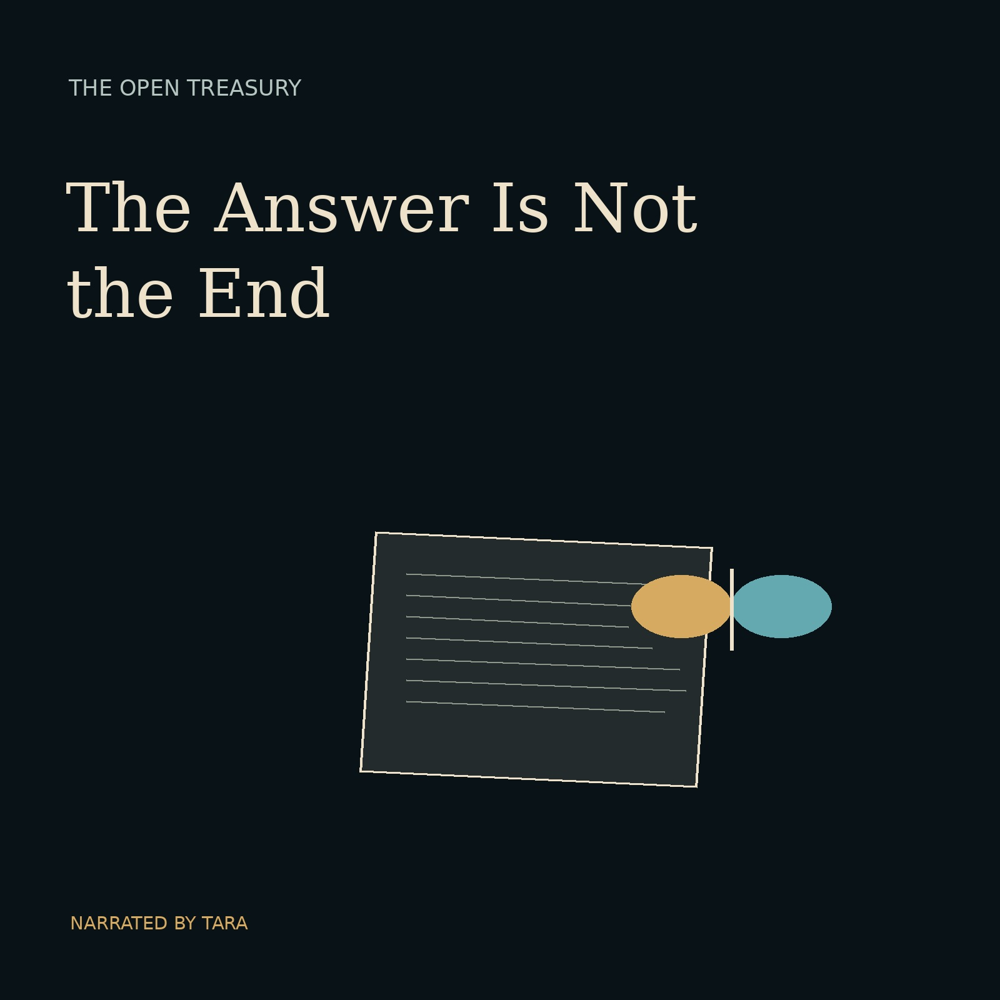

The Answer Is Not the End
The Exeter Book, a word-eating moth and Alice's tea table: why a good answer need not end a reading.
Selected readings, not a complete Exeter Book edition or a claim that disputed solutions are settled. Thorpe's numbering differs from modern editions. The moth's opening and ending are separate excerpts. The book metaphor must not be used to shame learners or turn literary ambiguity into uncertainty about consent or safety.
Chapters
- 00:00 - A raven at the table
- 02:19 - A book with questions still inside
- 04:55 - A moth ate words
- 07:18 - The book speaks back
- 09:50 - Who owns the solution?
- 12:26 - The Hatter's contract
- 14:46 - The objection: ignorance in a fancy hat
- 17:22 - After the click
- 19:50 - Make a small speaking thing
- 22:00 - Leave the words uneaten
Sources and complete script
Source, rights and audio notes
Complete spoken script
Rights and narration
Original interpretation with limited historical quotations, not a complete reading of the source works. Third-party rights remain separate; no blanket combined-media CC0 claim. Original symbolic moving visuals, no copied illustrations or music.
AI narration in Aoede; specialist-name pronunciation approximate. Full automated wording comparison and targeted checks, not a full human-ear certification. No substantive wording repair was required. Master -17.41 LUFS / -1.72 dBTP; MP3 -17.85 LUFS / -1.81 dBTP. Fixed gain +2.26 dB. Gain and transparent peak limiting only, no speed, pitch or EQ change.
Free listening without ads, paid access, sponsorship or support solicitation.
Got a question? Ask Tara - the best listener questions become short answer episodes.